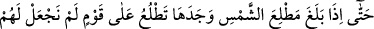
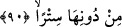

sokunca: “Getirin bana, üzerine bir miktar erimiş bakır dökeyim” dedi.
97. Bu sebeple onu ne aşmaya muktedir oldular ne de onu delebildiler.
98. Zülkarneyn: Bu, Rabbimden bir rahmettir. Fakat Rabbimin vaadi gelince, O,
bunu yerle bir eder. Rabbimin vaadi haktır, dedi.
“Sonra yine bir yol tuttu” Güneşin battığı yerden dönüp doğduğu tarafa götüren
başka bir yola girdi.
Kâşifî der ki: “Temâsük kavmini kendileriyle beraber götürdüler. Nûrânî askeri önleri
sıra giderdi. Zulmet askeri de arkalarını tutmuştu. İşte bu hâl ile güney tarafa yöneldiler.
Sağ tarafta olan Hâvil kavmi emre âmâde oldu. O yoldan doğu tarafa yöneldiler.”
90. Nihâyet güneşin doğduğu yere ulaşınca, onu öyle bir kavim üzerine doğar
buldu ki, onlar için güneşe karşı bir örtü yapmamıştık.
“Nihâyet” yeryüzünün meskûn bölgelerinden “güneşin” doğu taraftan ilk olarak
“doğduğu yere ulaşınca…” Çünkü, güneşin doğduğu yere ulaşması mümkün değildir.
Onun on iki yılda doğuya vardığı, bir başka görüşe göre de bulutun kendisine musahhar
kılınması, yolların dürülmesi ve benzeri zikredilen özelliklerine binâen daha az
zamanda doğuya ulaştığı söylenmiştir.
“Onu öyle bir kavim üzerine doğar buldu ki,” örtü ve bina gibi şeylerle “onlar için
güneşe karşı bir örtü yapmamıştık.” Yâni, onların güneşin harâretine karşı koruyan
örtüleri ve kendilerini gölgelendiren binaları yoktu. Çünkü toprağı gâyet yumuşak ve içi
dehlizlerle dolu olduğu için bina yapmaya elverişli değildi. Güneş doğunca
harâretinden dolayı, denize veya dehlizlere girerlerdi. Güneşin şiddetli harareti ortadan
kalkınca da çıkarlardı. Yâni güneş onların başından uzaklaştığı vakit yer altından dışarı
çıkarlar ve balık tutarlardı. Sonra onu güneşte kızartıp yerlerdi.
Haddâdî der ki: “Başlarında ve vücudlarında kıl, kaş ve benzerî şeyler yoktu. Sanki
yüzleri yüzülmüş gibiydi. Bu, o diyârın çok sıcak oluşundan dolayı idi.”
Eskilerden birinin şöyle dediği hikaye edilir: Yola çıkmıştım, Çin’i geçtim. Bu
zikredilen kavmi sordum. Bana: “Onlarla senin aranda bir gün ve gecelik yol var.”
dediler. Nihâyet o kavme ulaştım. Baktım ki onlardan biri kulağını yaymış, birini öbürü
ile sarıyordu. Beraberinde onların dilini anlayan bir arkadaşım vardı. Ona: Güneş nasıl
doğuyor, (görelim) diye geldik” dediler. Biz tam bu halde iken ansızın çıngırak sesi gibi
gür bir ses işittik. Ben bayılmışım, sonra ayıldım. Onlar beni yağla sıvazlıyorlardı.
Güneş deniz ufkunda doğunca, baktım ki zeytin yağı gibi suyun üzerinde. Onlar bizi